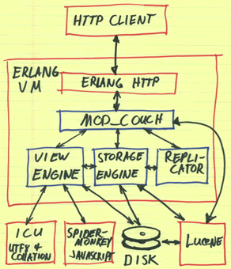

The CouchDB Project

Apache CouchDB is a document-oriented database that can be queried and indexed in a MapReduce fashion using JavaScript. CouchDB also offers incremental replication with bi-directional conflict detection and resolution.
CouchDB provides a RESTful JSON API than can be accessed from any environment that allows HTTP requests. There are myriad third-party client libraries that make this even easier from your programming language of choice. CouchDB’s built in Web administration console speaks directly to the database using HTTP requests issued from your browser.
CouchDB is written in Erlang, a robust functional programming language ideal for building concurrent distributed systems. Erlang allows for a flexible design that is easily scalable and readily extensible.
See the introduction and the technical overview for more information.
How to Get Started
Read the introduction and the technical overview to learn more about the design and basic concepts of CouchDB. To give it a try, download the CouchDB code from the Subversion repository and follow the included build instructions.
How to Get Involved
Join the mailing lists and participate in the discussions around the development of CouchDB. If you encounter a problem and have an idea how to fix it, please start by making a patch and filing it with our issue tracking system.
Team
Ever wondered who’s spending so much time making CouchDB? Even if you didn’t, you should take a look at the committers that work so hard to make your couch as comfy and relaxing as possible.